Java is an improved syntactical C++ programming language. Many of the features were to simplify programming while at the same time produce portable code. Java initial popularity was due to the Applet. Applets are Java Application programs that could be downloaded from a Server and executed on a Client system. Since Java is flexible and portable on any system executing the Java Virtual Machine (JVM), most browsers, have the JVM executables installed so that they can execute the Java Application as an Applet. Java applets can perform interactive animations, immediate calculations or other simple tasks without having to send a user request back to the server.
This Lecture has supplemental information and is located at the bottom. Java Plug-In, Appletviewer, Java ARchive (JAR) and Policy Tool are the current items in the supplemental area.Figure 1 shows a high level view of an Applet's process. A Client has a Browser executing and connects to a Web Server, e.g. Webpage. The Web Server contains several applications, Java applications are classes. The Webpage contains Java Classes or Java ARchive (JAR) files (containers of classes). These files (classes or JARs) are downloaded to the Client. Once the file has been downloaded to the Client the Server is now out of the picture. The Client now has an application and executes the application locally on the Client system.
|
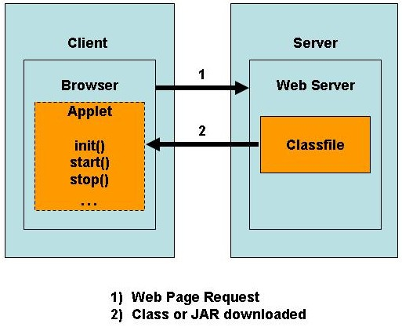 |
| Figure 1 - Applet Process |
The Java Plug-in software provides client
browsers with a Java 2 Runtime Environment (JRE) instead of the web
browser's default virtual machine. There is an example of viewing Plugin values in a Browser in the Supplemental
Materials.
The following link is how to set up your HTML file for Java Applets: http://java.sun.com/products/plugin/1.3/docs/tags.html
There are four main methods in an Applet's
lifecycle, init(), start(), stop() and destroy():
- The init() method is
executed only once when an applet is initialized. If you wish
initialization or Java statements to execute only once then place all
this information in the init() method.
- The start() method is executed
immediately after the init() method. The start() method is then
only
executed when brought back into focus when focus has been lost.
- The
stop() method is executed when a client moves off the Applet page (out
of focus).
- The destroy() method is called when the Applet should be garbage collected. This occurs when the browser shuts down. The stop() method is called immediately before the destroy() method is called.
| 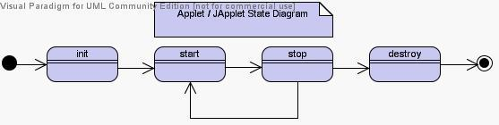 |
| Figure 2 - Applet Lifecycle |
Security, Applets are designed to be loaded from a remote server and then executed on a local client system. With this architecture security is a major concern. Prior to Java 2, all Applets followed the sandbox philosophy. This meant that when an Applet was loaded on your system, only a portion of memory was accessible to perform work.
The following are a short list of how Applets
execute in the sandbox model:
- Applets can't execute local programs
- Applets can't communicate with other systems than the originating host, the system who supplied the Applet
- Applets can't do I/O with the local system
- Applets can only retrieve basic information from your system
Figure 3, shows the code for our first Applet. Our class is called HelloWorldApplet which extends the JApplet class. There are two methods being used, init() and paint(). The init() method adds a JPanel the the JApplet. The paint() method is used for drawing on an Applet and the play method is showing and example of a sound file being played.
import java.awt.Graphics; |
| Figure 3 - First
Applet - HelloWorldApplet.java |
To execute the Applet you can display in a JVM enabled Browser or use the Appletviewer. See the notes in the Supplemental reading materials.
Figure 4 has a simple version of the HTML code for our first example
| <html> <head><title>Hello World Applet</title></head> <body> <applet code="HelloWorldApplet.class" codebase="." height=150 width=300> You need a Java-enabled browser to see this Applet. </applet> </body> </html> |
| Figure 4 - HTML Applet
Code |
Applets can also be displayed as an Application. This is known as a hybrid program, both Applet and Application. To execute as an Applet
use the Appletviewer or open up the HTML file. To execute as an application execute with the java command. Figure 5, shows an example
of the AppletApplication class.
import java.awt.Graphics; |
| Figure 5 - Applet and
Application Program |
Finally, we can add parameters to the HTML file that can be read by out Applet program.
Figure 6, shows the additional HTML tag <param> where we add parameters firstname and lastname along with their values. The JApplet program now extracts the data by placing the parameter name in the getParameter method.
| <applet> <param name="firstName" value="Max"> <param name="lastName" value="Estey"> </applet> String value = getParameter("firstName"); String value = getParameter("lastName"); |
| Figure 6 - Applet Parameter Passing |
Applets, Events and Listeners
Figure 7 shows an example of both Wndows and Mouse events in an applet. Moving a window on top and then behind of the Applet without completly covering is a better demonstration of the Window events. The counter will increment. Then moving the mouse inside and outside the Applet will show the start() and stop() methods being called.
| import java.awt.Color; import java.awt.Graphics; import java.awt.Graphics2D; import java.awt.event.MouseEvent; import java.awt.event.MouseListener; import javax.swing.JApplet; public class HelloWorldApplet extends JApplet implements MouseListener { private int counter = 0; public void init() { this.addMouseListener(this); System.out.println("init method"); this.showStatus("init method"); } public void start() { System.out.println("start method"); this.showStatus("start method"); } public void stop() { System.out.println("stop method"); this.showStatus("stop method"); } public void destroy() { System.out.println("destroy method"); this.showStatus("destroy method"); } public void paint(Graphics graphics) { Graphics2D graphics2D = (Graphics2D)graphics; graphics2D.drawString("Sound Example", 25, 25); this.showStatus("Counter: " + counter++); play(getDocumentBase(), "soundExample.au"); this.setBackground(Color.cyan); } public void mouseEntered(MouseEvent mouseEvent) { start(); } public void mouseExited(MouseEvent mouseEvent) { stop(); } public void mouseClicked(MouseEvent mouseEvent) {} public void mousePressed(MouseEvent mouseEvent) {} public void mouseReleased(MouseEvent mouseEvent) {} public void update(Graphics graphics){ paint(graphics); } } |
| Figure 7 - Applets
with Events and Listeners |
Summary
This is lecture gave an examples of Java Applets, the code to write a Java Applet and the HTML file to execute the Java class. Java Applet passing parameters was also discussed and shows the simplicity of the Java language. Java Applets when first introduced in 1995 proved to the Internet world how you could write an application with simple programming.
References
- Applet, http://searchwebservices.techtarget.com/sDefinition/0,,sid26_gci211580,00.html, Accessed 06 June 2004
- Appletviewer, http://java.sun.com/j2se/1.3/docs/tooldocs/solaris/appletviewer.html, Accessed 06 June 2004
- JAR, http://searchdatabase.techtarget.com/sDefinition/0,,sid13_gci212414,00.html, Accessed 06 June 2004
- Plugin,
http://whatis.techtarget.com/definition/0,,sid9_gci212800,00.html,
Accessed 06 June 2004
- Policytool, http://java.sun.com/developer/onlineTraining/Security/Fundamentals/magercises/Policytool/, Accessed 06 June 2004
- Java Coding Conventions, http://java.sun.com/docs/codeconv/html/CodeConvTOC.doc.html, Accessed 06 January 2000
- Jar
Signer,
http://java.sun.com/j2se/1.3/docs/tooldocs/win32/jarsigner.html,
Accessed 19 July 2004
Advance Applet Code
Figure S-1 is an advanced example for a Java Applet in an HyperText Markup Language (HTML) file.
<!-- Internet Explorer Browser --> |
| Figure S-1 - Advanced
Applet Code |
- classid (class identifier) for the Java Plugin, the class identifier should be the same in every HTML page
- browsers load the Java Plugin using the particular class identifer
- attributes width, height and align set up the Applet accordingly
- code parameter defines the class or jar file where to find the executable
- codebase parameter defines the path to the class or jar file
- type parameter defines which executable to implement
Java Plug-In Screen
|
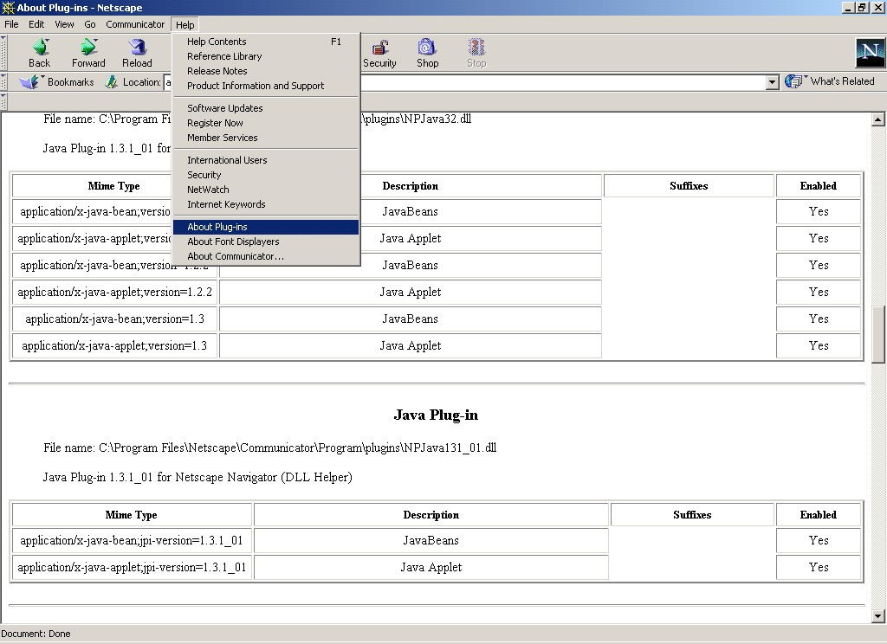 |
| Figure S-2 - Client /
Server Architecture |
Java Tools
This section talks about the Java Tools that help with development and implementation of Java Applets. The Appletviewer program enables developers to visualize their work without having to worry about plug-ins or browser conformance. The Java Archive (JAR) tool encapsulates and compresses several files into one file. The Policy Tool enables Java Applets more flexibility and loosens up security of the Java Sandbox.
All the Java Tools are in the Java bin directory. Make sure that the Java bin directory is in your path, e.g. set PATH=%PATH%;c:\jdk1.4\bin This will ensure that all you need to execute the tools is with a single command and not the entire path name.
Appletviewer
Appletviewer is an executable program that was available with the initial release of the JDK. This tools enables developers to visualize and execute Java Applets without the worrying about Browser shortcomings or plug-in requirements. Appletviewer also bypasses all the security rules so that you can see functionally how your program works without having to worry about annoyances of Web Browsers. I am not saying that Security should be avoided but in a development context, functionality and innovation is the goal and the security phase is one of the last tasks.
To start up the Appletviewer program is simple. Just type appletviewer, the appleviewer program will appear as follows:
|
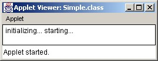 |
| Figure S-3 - Applet Viewer |
The Appletviewer command is as follows: Usage: appletviewer
<options> url(s)
For debugging purposes you can use the following command:
appletviewer -debug URL
Here's an example: appletviewer
-debug file:///C:/AppletExample.html
You can now step through the code and if you want information about the debugging commands, type ?
Here's an example of appletviewer using a policy file:
appletviewer -J-Djava.security.policy=cv64.policy AppletExample.html
Java ARchive (JAR)
Java ARchive (JAR) files are simply a collection of one to many classes in a single container. JAR files are very similar to the Zip file.
Usage:
jar {ctxu}[vfm0M] [jar-file]
[manifest-file] [-C dir] files ...
-
Example 1: Archive two class files into an archive called classes.jar: jar cvf classes.jar One.class Two.class
-
Example 2: Use an existing manifest file 'mymanifest' and archive all the files in the foo/ directory into 'classes.jar': jar cvfm classes.jar mymanifest -C foo/
Jar Signer (jarsigner) In Work
jarsigner -keystore C:\java\max -storepass myPassword -keypass keyPassword maxs.jar max
Policy Tool
The Java Developer Kit versions 1.2 and later (Java 2) was modified with new security schemes to provide restricted access to system resources. The new tool in Java 2 is the Java Policy Tool. The following paragraphs and illustrations are how to interact with the tool.
|
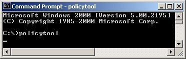 |
| Figure Policy-1 - Policy Tool |
To start up the Policy Tool, just type policytool.
|
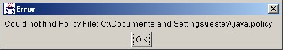 |
| Figure Policy-2 - Policy File Warning |
You might get a warning stating that the policy file isn't set. This only means that there is no default file set. Just press the OK button and we will fix this in a couple minutes.
|
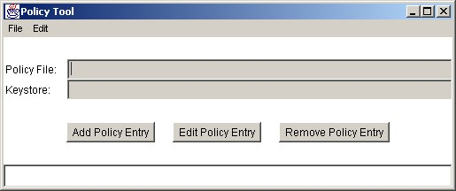 |
| Figure Policy-3 - Policy Tool |
This screen is the policy tool.
|
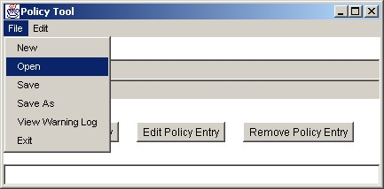 |
| Figure Policy-4 - Opening Policy File |
Click on the File button and select Open.
|
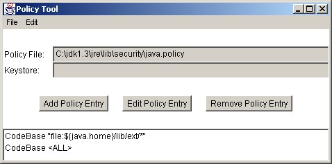 |
| Figure Policy-5 - Policy File Selection |
You have a choice to either go with the default policy file or your own policy file. For educational purposes we will go with the system default policy file. The system default policy file is located where you placed the JVM under the jre/lib/security directory and is named java.policy. So our example the JVM was placed in the directory c:\jdk1.3, so the default policy file is located at c:\jdk1.3\jre\lib\security\java.policy. Once the file has been loaded the policy file will fill in the information as illustrated above. The policy tool also displays the current policies in effect in the textarea at the bottom of the tool.
The policy file for which you wish to perform signed applets or open up the Java Applet Sandbox is now open and set. To make modifications to the policies, modifications are made through the policy tool as described next.
The are three buttons on the policy tool. Add, Edit or Remove. These are the policies that will be instanciated when Applet Security outside the Sandbox is performed. We are going to add a policy in this discussion. Edit allows you to edit previously defined policies and Remove removes any previous policies. To add a policy press the Add Policy Entry button.
|
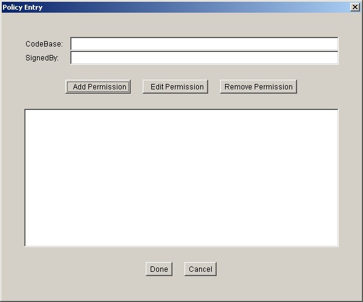 |
| Figure Policy-6 - Policy Entry |
The policy entry screen is now displayed. We are going to add a new permissions press the Add Permission button.
| 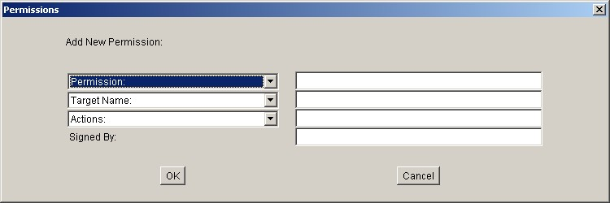 |
| Figure Policy-7- Permissions |
This is the Permissions screen. This is where you actually define the different permissions, accesses, etc. For this discussion we are going to open up the Java Sandbox. Click on the Permission pulldown and select AllPermission.
|
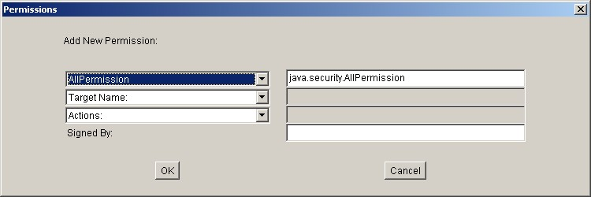 |
| Figure Policy-8- Policy Tool |
We are adding the AllPermission policy so that security will be lax for demo purposes. The text field to the right will now display java.security.AllPermission. Now press OK which will activate our new AllPermission policy.
|
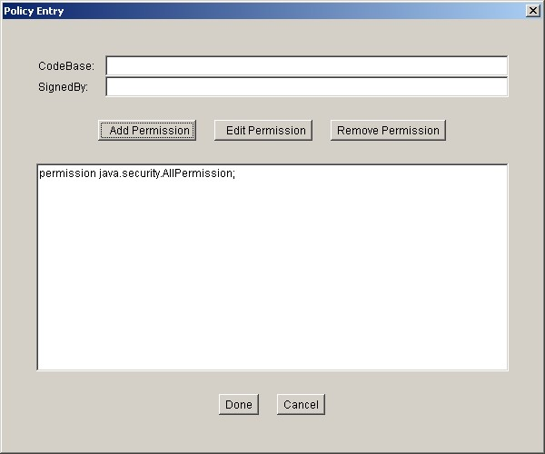 |
| Figure Policy-9- Policy Tool Startup |
The Policy Entry screen reappears and displays our policy and permission selections. Press the Done button if everything is correct.
| 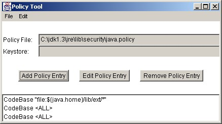 |
| Figure Policy-10- Policy Tool Startup |
The policy tool main screen now redisplays and shows that there were some modifications. In our cases CodeBase <ALL> shows up twice. This is because we gave AllPermission to everything. Press the File menu item and select Save. We want to save the new policy and permissions.
| 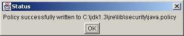 |
| Figure Policy-11- Policy Tool Startup |
This is the last screen notifying you that the
policies were saved.
| Policy File |
Policy File Path |
Examples |
| System Policy File Location |
java.home\lib\security\java.policy |
C:\Program
Files\Java\jre1.5.0\lib\security\java.policy |
| User Policy File Location |
user.home\.java.policy (Note: There is a leading period in front of java) |
C:\Documents and
Settings\restey\.java.policy |
Below is an example of the .java.policy tool file:
grant {
permission java.security.AllPermission;
};
 Web
Contact
Web
ContactLast modified: 2003 December 31